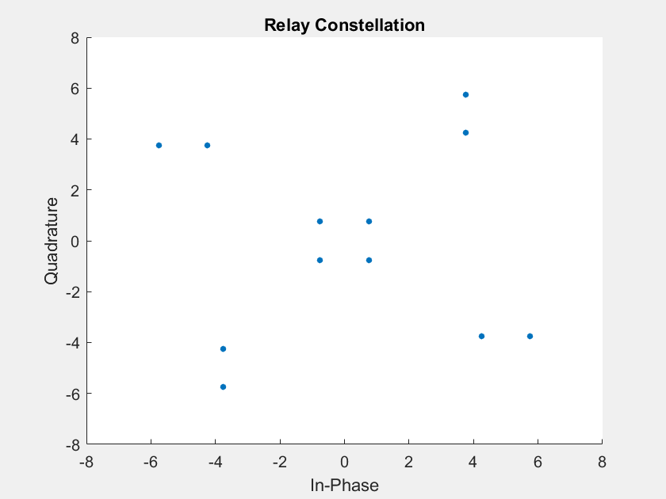

<!DOCTYPE html>

<html>

<head>

<title>Physical-Layer Network Coding</title>
<meta charset="UTF-8">
<meta name="viewport" content="width=device-width, initial-scale=1.0"/>
<link rel="stylesheet" type="text/css" href="main.css" />

<script type="text/javascript" async
  src="https://cdnjs.cloudflare.com/ajax/libs/mathjax/2.7.2/MathJax.js?config=TeX-MML-AM_CHTML">
</head>


<body>

    <h1>Physical-Layer Network Coding</h1>

    <p>
    When \(a \ne 0\), there are two solutions to \(ax^2 + bx + c = 0\) and they are
    $$x = {-b \pm \sqrt{b^2-4ac} \over 2a}.$$
    </p>
    
    <!--
    
    -->
</body>

</html>